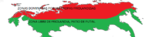

De: La Frikipedia, la enciclopedia extremadamente seria.
De: La Frikipedia, la enciclopedia extremadamente seria. De: La Frikipedia, la enciclopedia extremadamente seria.
| De la serie Países del planeta tierra: | |||||
| tasavalta separatisti ja kylmäSuomi/ tapasapavapaltapa sepepaparapatipistipi japa kylmäpäsupuopomipi/ separatistisk republik av kallland/ tbryterrepublikken av kuldeland/ Непризнанной республики холодноФинляндия (nepriznannoy respubliki holodnofinlyandiya)/ PEPUBLIKKA ROTHAAF OFDE BRRLAND | |||||
|---|---|---|---|---|---|
| |||||
| Lema: HOHOHO. | |||||
| Himno: ¡Navidad! !Navidad!
| |||||
| 
| |||||
| Capital | La Casa de Santa Claus | ||||
| Mayor ciudad | Pope Joulu | ||||
| Lenguas oficiales | Finés, Clausafines, Sueco, Noruego, Ruso y Friolandes. | ||||
| Gobierno | Monarquia helada. | ||||
| Jefe de Estado | Papa noel | ||||
| Área | Norte de finlandia, Noruega, Rusia y Suecia y por desgracia nuestra muy pronto en Islandia, por lo cual un idioma más si Erik el Rojo lo permite. | ||||
| Población | Duendes, Renos, Rubias y Pornostars Suecos-Noruegos. | ||||
| Moneda | Caca de rudolf, Leuros y Cheleuros. | ||||
| Zona horaria | 6 meses de día, 6 meses de noche y 24 horas de navidad | ||||
| Dominio Internet | .xxx | ||||
| Código telefónico | 134577455!!!!SANTA
| ||||
| ¿HOLA? ¿Santa?. No soy un actor porno. | |||||
Friolandia officialmente República separatista de Friolandia, Aunque tambien para los rusos NO OTRA CHECHENIA MAS ( En fines:tasavalta separatisti ja kylmäSuomi, claustalandes tapasapavapaltapa sepepaparapatipistipi japa kylmäpäsupuopomipi. En Sueco: separatistisk republik av kallland, Noruego: Utbryterrepublikken av kuldeland en ruso: Непризнанной республики холодноФинляндия (nepriznannoy respubliki holodnofinlyandiya) y en Friolandes( PEPUBLIKKA ROTHAAF OFDE BRRLAND) es un zona independentista de Finlandia comanda por papa noel y sus duendes..........ademas de algunas cuantas rubias sexys.
Se ubica al norte del pene finlandia, es la zona más al norte.
Se quieren separar porque el gobierno finlandes (pato donald) les cobra muchos impuestos por hacer regalos sin pagar............Ademas de la mafia de los hielos.
Es muy parecida a la finlandesas,solamente que viven desnudos,toman y fuman cafe,torturan teletubies y hacen regalos. Ademas de reproducirse.
En Diciembre de 2010,Papa noel comunicaba atravez de un noticiero,Que su zona se separaria de Finlandia,Porque El pato donald,queria llevar a los duendes a un asilo por trabajar en negro.Esto desato la primer guerra.
En enero de 2010,Friolandia Mando una tropa de 500 renos, 250 trineos , y 100.000.000 de duendes ( Aunque su población es de 5.000.000 no cuentan a los duendes). cargados de 100000.0000.0000.0000.0000 (como mierda se lea el numero) de bolas de nieve, a la ciudad de Helnski. Los finlandeses a ver esto comenzaron a lanzar bolas de nieves y la batalla comenzo. Cuyo resultado fueron
Como vimos los resultados gano Friolandia.
Son gordos como papa noel, enanos como los duendes y rubios.
Mucho frío, pá cagarse en invierno. hace tanto frío en invierno que hasta los hombres llevan pantys (que ya empiezas a dudar de tu sexualidad) para proteger del frío, sus partes ´´nobles´´, pero que luego se las machacan contra la nieve después de la sauna. A veces piensas : aah! pero si tampoco creo que haga mucho frío, yo con un suéter y zapatillas me las arreglo, cuando llegas a quitarte las zapatillas te salen los pies sin dedos. Lo mejor es comer mucho para estar como el gordo cabrón de papa noel es decir como una foca, asi que a alimentarse, cómo dice tu abuela, tu madre, tu padre .... eYo!
En verano suavecito que es cuando todo frioandes muestra su cuerpo sersy blankusko al sol y ver cómo se le cambia el color de blanco a rojo es todo un fenómeno, suele llover (casi todos los días) y también caen relámpagos, que los lanza Thor, aunque, en realidad los friolandeses no son vikingos, este es un imigrante ilegal turista.
Más arriba todavía, en Friolandia vive el Hijo puta Santa Claus allá dónde los reyes de oriente no llegan, por que sino le daban de ostiaz por gordo cabrón, en verano hace sol las 24h y invierno hay oscuridad las 24h, lo que pasa en primavera y otoño no se sabe, por que en esas fechas no hay turismo ni vida, también existe un fenómeno atmosférico, llamada aurora bolear, lo más parecido a una discoteca al aire libre.
En otoño se caen las hojas por que lo digo YO (...y la madre naturaleza...) ( osea la misma mierda que Finlandia igual a finlandia.
El 6/11/12 las tropas de papa noel fueron a helsinki y Heiniken a para "Hacer las compras de los materiales de navidad" lo que sucedió fue que friolandia con ayuda de mc donald y lo vendieron en una compra a un estudiante de intercambiofinlandes
El 25 de diciembre de 2012 Friolandia aprovecho la navidad y lleno un Trineo no tripulado de Municiones las cuales fueron lanzadas en Norte de Suecia (Región friolandesa de PornsuecoFrioland) Norte de Noruega (Región Friolandesa de Pornoruegasfrioland) y el 1/1/13 a Rusia ( Región friolandesa de Vodkafrioland) y Cuando llegaron a Islandia Fueron alcanzados por un misil enviado por Thor y fueron derivado
Primer mapa (Diciembre de 2010)
Aquí vemos cuando el melote de Santa clous se separo del Pato lucas, perdón Donald.
Mapa luego de La guerra 6/11/12 al 21/12/12, Si son peor que Kosovo.
Mapa luego de los bombardeos del Trineo no tripulado, atención en esta zona putin envió un arma gigante y mato al reno, pero luego volvió el 1/1/13 y lo invadió.
Por Ahora mapa final (Aunque próximamente Friolandia tendrá A Islandia y Groenlandia, sera hasta Alaska si lo permite Estado hundidos de Norteamérica
Nota este mapa parece chico pero es mas grande que el miembro de un negro casi tan grande como rusia.
Hace recientemente 30 minutos cuando en la ONU acaba de ver un video porno perdon, de por que se queria separar Friolandia, el jefe de la onu unos ingleses borrachos dijieron "PERO QUE EL SON OF A BEACH (SI PLAYA NO SEAN MAL PENSADOS) DE SANTA CLOUS NO PUEDO HACER ESTO,YA QUE CUANDO ERA CHIQUITO, NO ME TRAGO MI BICICLETA POR LO TANTO, NO SERAN RECONOCIDOS POR LA ONU, ESTO TRAGO PROBLEMAS Y SON
Si, esta lista tambien esta tambien es valida para los regalos de papa noel.
Si, esta lista también esta también es valida para los regalos de papa noel.
  Imperios de Europa Imperios de Europa
|
|---|
| Eslovaquia |
Autor(es):